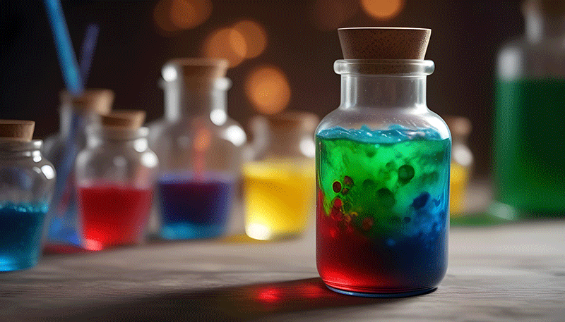
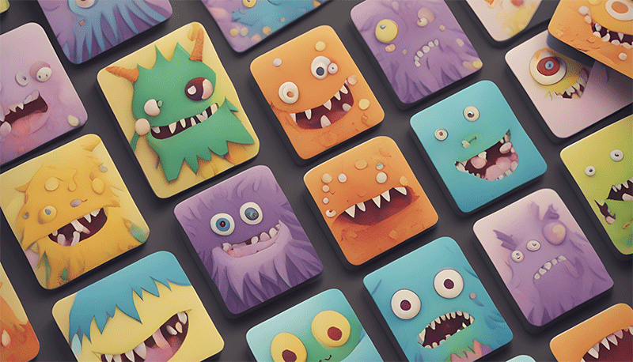
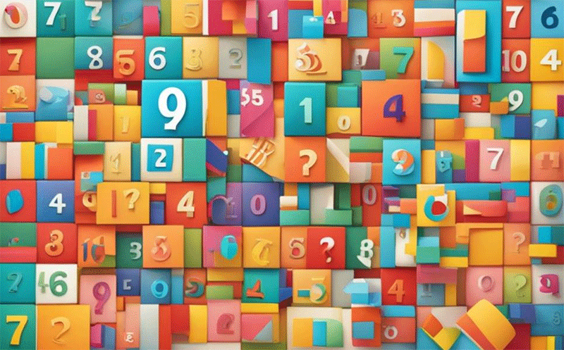
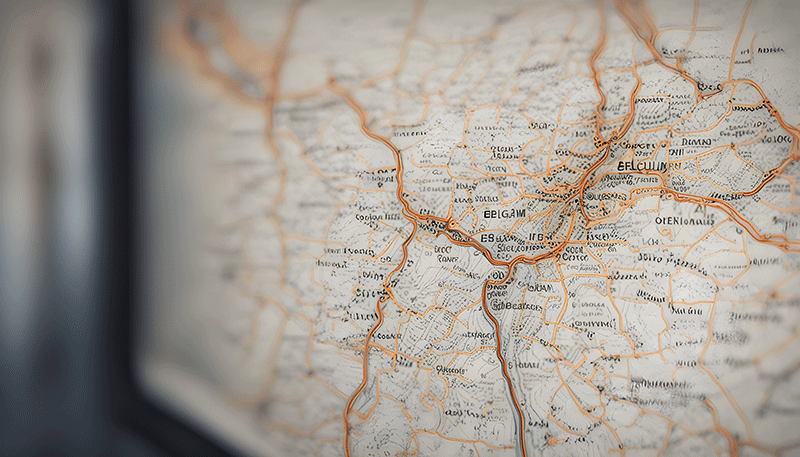

Réalisations
“ Le but de la vie est le développement personnel. Parvenir à une parfaite réalisation de sa nature, bla bla bla.” - Wilde (Oscar) -
Système solaire
Le code crée une animation du système solaire en SVG avec des fonctionnalités ...

Potion MindMaster
Le joueur doit deviner la combinaison de potions secrète, composée de 4 couleurs, dans ...
Animation
Dessin SVG interractif. L'utilisateur doit activer des éléments de l'usine en cliquant sur ...

Memory game
Ce code HTML et CSS est à la base d'un jeu de mémoire en ligne. Les cartes sont retournées ...

Words VS Zombies
Objectif du Jeu : Survivre à trois vagues de zombies en devinant correctement les ...

Quiz
Ce code HTML établit une page web pour un quiz interactif, combinant balises HTML pour la ...

Liste de tâches
Base d'une application de liste de tâches qui intègre des bibliothèques comme Font Awesome et ...
Timer
Ce code HTML et JavaScript crée une horloge interactive avec un chronomètre et un minuteur ...
Art timeline
Ce code HTML et JavaScript crée une chronologie interactive pour afficher des mouvements ...
Calculatrice
Ce code HTML crée une calculatrice web interactive. Il utilise HTML, CSS, JavaScript, et jQuery ...
Pendu volant
Ce code HTML crée un jeu de pendu avec des animations en JavaScript et la bibliothèque ...

Plus ou moins
Ce code HTML, CSS et JavaScript crée un jeu "Plus ou Moins" où l'utilisateur doit deviner un code ...

Carte
Ce code HTML utilise Bootstrap, JavaScript, et CSS pour créer une carte SVG interactive des ...
Qui suis-je?
“ J’ai toujours rêvé que mon ordinateur soit aussi simple à utiliser que mon téléphone. Ce rêve est devenu réalité : je ne comprends plus comment utiliser mon téléphone” - Bjarne Stroustrup -
Profil
Passionné depuis toujours d'informatique et de nouvelles technologies, j'ai entrepris des études d'arts plastiques en secondaire, suivies d'une formation en infographie. Par la suite, j'ai suivi une première formation en développement web pour acquérir les bases essentielles de la programmation web. Durant ce parcours, j'ai appris à être autodidacte et à développer un esprit logique, dynamique et débrouillard. Pour approfondir mes compétences, j'ai également suivi une deuxième formation spécialisée en Express, React et Android Studio avec Java/Kotlin, consolidant ainsi mon expertise en développement web et mobile.
Détails
- Canivet Geoffrey
- 17 Juillet 1985
- Région de Charleroi (BE)
- geoffreycanivet@gmail.com
- +32 468 37 00 13
Curriculum Vitae
“ Le fossé séparant théorie et pratique est moins large en théorie qu’il ne l’est en pratique.” - Auteur Inconnu -
2024
spécialisation web / mobile
Technofutur TIC. Formation spécialisée en Express, React, React Native et Android Studio pour approfondir mes compétences en développement web et mobile.
2019
Call Center FAI
2019-2024. Prise en charge des réclamations clients, accompagnement technique et dépannages pour VOO.
2018
Développement Web
Début 2018, j'apprends la programmation et le développemet web grâce à la formation BeCode au Quai10 à Charleroi.
2012
Infographie
Afin d'améliorer mes conaissances dans le milieu du numérique, en 2015, j'ai entrepris des études d'infographie à l'université du travail de Charleroi.
Option: Infographie
2006
Animation numérique
En 2005 j'ai suivi des études de recherche graphique déstinée à l'animation. Au sein de l'établissement St Luc à Bruxelles.
2004
Art plastique
J'ai obtenu le certificat d’enseignement secondaire supérieur (CESS) en 2004 au CECS La Garenne de Charleroi.